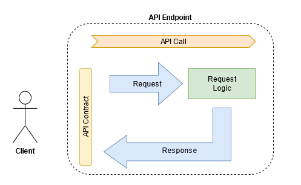

Definition of API requirements

There is a 2nd revision of this article, so please read it instead. This, as my first published post in this blog, will stay here as a reminder of my bad writing.
At some point in my career, I faced a need to specify requirements for API. Those were not typical solution requirements I worked on before. I learned about the API layer which is very common among the enterprise systems. It can hide a set of microservices or a legacy system from the outer world. Like any other system, it is also impacted by stakeholders' needs. And those needs have to be translated into requirements.
We are going to decompose the definition of API requirements and see what lies within. I will pay your attention to what should be taken into consideration for the API layer. It is an introduction to this topic as there are other sides of it to explore further.
We are not going to talk about implementation types of API such as REST, RPC, GraphQL, etc. Ideally, requirements should not be tied to the technical implementation and that rule works here as well.
I have been working more with REST and REST-like APIs. Like most of you, I believe. However, I think my experience can be applied to other types as well. Considering some specifics, of course. But those are not covered here.
Why You Don't Need API Requirements
Before we start you need to ask yourself:
Do I need to write and maintain requirements for API?
As a System or Business analyst, you don't need to proceed with them if the API is used only within your service. In that case, it is a part of the provided functionality.
You can define a user story describing acceptance criteria with a bunch of functional, quality (non-functional) requirements, and attach UI wireframes. That is all about expected outcomes to be reflected on a UI and/or in data. API is something in-between that you don't need to care about. It is a part of technical design managed by the engineering team with the main purpose to address the requirements.
But if your API is publicly exposed you need to consider interests of other parties. Those parties can be split into two big categories:
- Other teams within your organization.
- Customers and partners outside your organization.
Despite obvious differences between them, they both need your service to reach their own business goals. Each party has its context under which your service is used and a particular integration approach. Thus you need to consider them as stakeholders and address their concerns to provide great customer experience.
It is important to separate the functional requirements from API ones. API requirements are not about introducing new or improving current functionality. That is about providing the right way to use that functionality. So we identify the back-end as a functional piece and API as a gateway to access that functionality provided by the aforesaid.
Terms & Definitions
One more step before we go forward. Let us clarify some concepts and align on the terms used below.
API is translated as "Application Programmable Interface" but that does not give you a key without a Computer Science degree. For my "Bachelor of Arts" fellows, the main word here is an "Interface". Generally, your mouth and tongue are an interface for speech communication. Your fingers are an interface to type text on your keyboard for written communication. The same is applied to the software in which classes and instances communicate with each other in some strictly formalized way.
API is a very broad term. Here we talk about the gateway through which your service communicates with the outside world.
API endpoint is a single instance of API with a unique address (URL). Sending a required input to that URL triggers some command within your system and returns an output about a successful result or failure.
Example:
POST https://ecomplatform/api/v1/purchases/{purchaseId}/cancel
API call is a process of sending a request to an API endpoint and getting a response.
Client is a general term to identify someone or something that is using your API.
API Definition
What & Why
To provide the right API endpoint your need to understand:
- What is that API doing?
- Why is it required?
The first question seems to be an easy one. Usually, there are data objects of some Entity that we can access and conduct some action with them. The basic actions are Create, Read, Update, Delete (CRUD) operations. Even some specific actions are just about changing some information in a data object.
For example, our API endpoint should cancel a purchase in a store. A "Purchase" is an object and "cancel" is a required action. It is a single purchase so we need: a) make sure how we identify a right Purchase to cancel; b) how we proceed with the cancellation.
Cancellation can mean an actual deletion (bad idea) or an update (good idea) of a Purchase data object. Changing a state of an object might trigger a chain of information updates elsewhere in the system. You should be aware about the business logic. Either it is triggered automatically or you need to make additional API calls to complete that action.
The second question is more complex. An API call is a non-visible participant of the interaction between a user and the system (i.e. Use Case). One call can participate in several use cases with each having its context. You might cover each context with a separate API endpoint or craft the one to rule them all. That is a question of implementation. The main thing here is that you need to understand those contexts.
Again, it is easier to own the context when it is all about systems within your organization. But when API goes outside and customer success is relying on that, it is difficult to consider all possible contexts which may appear.
You lack control over how APIs are used. You can define the rules, provide some documentation, and hope that will work. Just be prepared that problems occur where no one expects them to be.
Prerequisites
Now we know why we build our API endpoint and what it does. Next step to define what conditions need to be satisfied to make that call. In most cases we talk here about authentication and authorization:
- Authentication is about verifying a client and giving them the possibility to communicate with your service.
- Authorization is about permission to allow certain clients to make particular API requests.
Authentication is usually managed on a higher level considering an API layer itself. The specific API endpoint is likely to follow that approach. But if there is an exception from that rule, such requirements need to be considered.
Permissions are usually managed on the back-end side. But some constraints may be imposed on the API layer as well. You can proceed with different API endpoints which are doing the same thing but for different roles, considering business restrictions.
For example: canceling a Purchase by a Customer and canceling a Purchase by an Admin. Same action but with two different contexts. Let us assume that an Admin can skip some validation steps in business logic to cancel a Customer's Purchase in a simplified way. When designing an API endpoint you need to make sure that dangerous power will be used only by Admins. There are a dozen ways of handling this but that requirement should not be missed.
API Call
Now we are ready to design our API endpoint. Its definition consists of two things:
- API Contract for Request and Response
- Request logic

API Request Contract
API contract is an agreement about expected input and outcome between you and your clients. Communication via API is strictly formalized and clients accept to follow the provided format. They accept it by default when starting using your API. The API owner takes responsibility to follow the contract obligations by maintaining the operability of the service and consistency of the contract itself.
For input, you expect clients to provide required and optional parameters. Required parameters usually identify objects or a set of homogeneous objects to access or modify them. The optional is used to modify expected responses and provide additional information.
Generally, input parameters can be provided in a few ways:
- Manual user input When a User submits manually-typed information on the client-side passing directly to API.
- Context-provided input When the request is taken or combined from responses of preceding API calls made in that particular Use Case.
From a technical perspective, there is no difference in how request parameters are provided. But that should be considered during the analysis.
For example, you need to request a single Purchase. First, you find out what ID should be used to load a Purchase object. In “bloody” enterprise systems, there are always several identifiers for the same objects in different contexts. Let us assume a Purchase entity has Business ID as something human-readable and System ID as a hashcode.
Our API endpoint asks for System ID to get Purchase details. That is OK, but what if clients expect their customers to manually enter a Purchase ID for some verification on that step of a Use Case?
I would expect you to ask a question "How did a Customer get that ID before?" Let it be available on a bill and now a Customer wants to see Purchase details without being authenticated in the app. And providing System ID on that is not an option. Only if the customer suffering is a part of UX design.
We can quickly consider a workaround by making a Purchase search request with Business ID, then extract a System ID from a found Purchase and make a call for Purchase details. Fine if you can use search for that purpose. But your clients need to make two API calls instead of one.
Again, there are dozens of ways to handle such cases. This is just an illustration of how simple things might become surprisingly complex.
Request Logic
When clients send a request to API then something should happen. Either we get a successful response or an error, some work is done beneath. We can consider:
- "Simple" request Making one call to the back-end with basic CRUD operation to a data object of a single Entity.
- "Composite" request Making a chain of calls to one or several back-end services with a few Entities involved. That means you are hiding that complexity from the clients. Otherwise, they would be forced to do all those operations and transformations by themselves with a high risk of doing something wrong.
You need to define a sequence of steps on how that chain will work. It is important to consider accessibility, especially if third-parties services are involved. And what kind of request is passed for each call and how each response should be processed.
Don't forget about non-functional stuff: maintaining overall performance and sustainability. More steps we have in a sequence - the higher probability of a failure. You need to consider different "bad" scenarios: long response time, bad data, downtime, etc. Even if such "edge" cases seem to be unreal you should consider them. Even you can't cover them all due to time and financial restrictions.
Whether you call other services within your organization or a third-party, now you are in the client’s shoes. You agree with the contract hoping both parties are going to follow their commitment. If you can somehow impact other services inside your organization by forcing them to follow or change the contract, for third-parties and vendors that can be problematic. Only if you have the leverage to make them but that is not always the case in real life. Anyway, all that should be considered when you are defining a composite API call.
API Response Contract
For a successful call, an API endpoint returns a response with some amount of information. That can be all information about a data object or just a message that information about that object has been updated. It is a matter of request type and endpoint design.
You need to consider that the data model stored in your database is not the same as the data model provided to the clients via API. B First, there can be some differences in data types used. Secondly, there is no need to expose all attributes you have in the data model via API. There is always some information you don't want to share with some types of users.
Providing expected outcomes is a part of the Contract. So the information should correspond to clients' goals and expected format. Sometimes you need to transform the data originally provided by the back-end. That can be localization to a different language, another date format, currency conversion, combining data objects of different entities, adapting data from third-party providers, etc. Data mapping is the right requirement artifact to keep that important information.
Epilogue
That is just a basic overview of what is beneath the API layer. We are not touching specific implementation and possible format of API specification and documentation. Hopefully, we will investigate those topics in the future.